coverThree surfaces over one data model — customer app, admin console, worker view.
01 · overviewthe premise
The Last Manual Mile.
India's kirana wholesale economy moves more groceries than most countries' organised
retail combined. It also runs almost entirely on pen, paper, and WhatsApp. Only the
invoice was ever digital.
This case study walks through how we designed three connected surfaces — an Admin
Console, a Worker View, and a B2B Customer App — to bring inventory, storage, and
ordering operations onto a single, real-time system.
02 · roleco-lead ux
Three Surfaces, One Operation.
I co-led the UX for this product with another designer. Between us we owned the full
system: information architecture, interaction patterns, visual design, and the design
system that holds it together.
What made this project unusual wasn't the scope — it was the cognitive distance between
the users. We were designing for three completely different humans, working in three
completely different conditions, looking at the same underlying data.
I worked alongside the business owner, a PM, a developer, my design counterpart, and —
most importantly — the field stakeholders. Most of the real design decisions were made on
the godown floor, not in Figma.
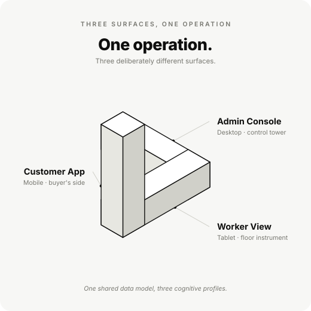
fig. 01One operation, three deliberately different surfaces.
03 · key challenges04 problems
Pen, Paper, Pain.
The admin backend was almost entirely manual. Only the final invoice was digital.
Everything before that — receiving sacks of atta, weighing each lot, slotting them into a
rack, picking against an order, dispatching — lived in a paper ledger and in the head of
whoever was on shift that day.
That fragility shows up in four predictable ways.
challenge 01
Stock vanishes between receipt and rack.
the pain
Bulk grocery is sold and consumed by weight, not by unit. A 50 kg sack of toor dal
becomes a hundred different invoices over a fortnight. Manual ledgers can't keep up
— and small losses compound silently. Industry estimates put inventory shrinkage in
unorganised B2B wholesale at 5–10%.
the move
A real-time, weight-aware stock ledger. Every receipt, every pick, every dispatch
updates a single source of truth — measured in kilograms first, packs
second.
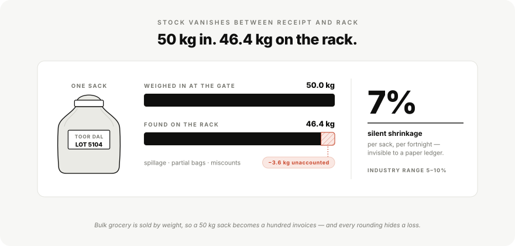
fig. 0250 kg in, 46.4 kg on the rack — the loss a paper ledger never sees.
challenge 02
The godown is a memory palace.
the pain
Workers knew the godown the way you know your kitchen. Which rack the basmati lives
on, which lot is closer to expiry — all of it sat in long-term human memory. When
the worker took a leave, the system went down.
the move
A digitised Godown Grid — every rack and batch becomes a tappable
cell with weight, lot date, and pick priority. Memory moves from the worker to the
screen.
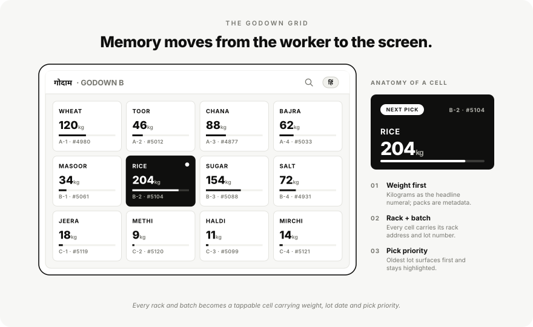
fig. 03The Godown Grid — the racking plan, made legible on a screen.
challenge 03
Orders live on WhatsApp.
the pain
Small kiranas placed orders through phone calls and message threads. Confirmations,
edits, delivery times, and quality complaints all happened in scattered chats.
Owners spent hours every morning translating those threads into the day's pick list.
the move
A B2B Customer App that turns ordering, status, and delivery scheduling into a
single, status-first flow. Edits and cancellations replace messages.
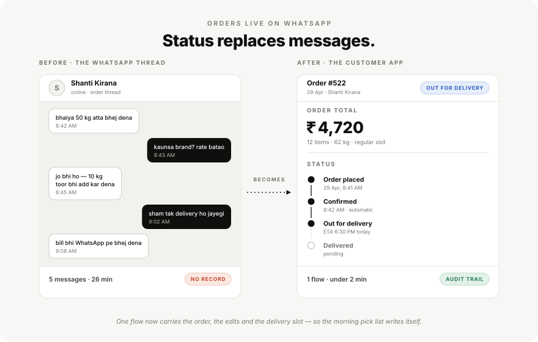
fig. 04Five messages over 26 minutes with no record, against one flow in under two.
challenge 04
Workers don't read English.
the pain
The frontline workforce is multilingual, often more fluent in Hindi or a regional
language than in English. Most off-the-shelf inventory tools assume English fluency
and dense text. That gap was the single biggest reason past digitisation attempts
had failed.
the move
A language-first worker interface — short glanceable labels, large numerics,
iconography that survives translation. English is one option, not the default.
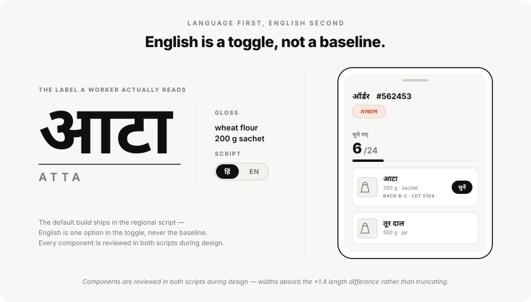
fig. 05English is a toggle, not a baseline — the default build ships in the regional script.
framework
The Three-Surface Model
These four challenges aren't independent — they're symptoms of one structural mismatch.
We named the response The Three-Surface Model: one shared data model, three deliberately
different surfaces, each tuned to a specific cognitive profile and physical context.
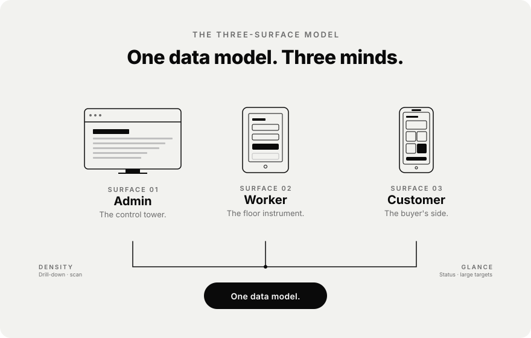
fig. 06One data model, three surfaces, three cognitive profiles.
04 · process03 field visits
Boots on the Godown Floor.
We didn't begin in Figma. We began with three field visits to live wholesale operations —
godowns, dispatch areas, customer kiranas — and a notebook each.
Watching is the work.
We saw a worker carry a 25 kg bag and a phone in the same hand. We saw an owner argue with
a customer over a 200 g discrepancy that no system could prove. None of that lives on a
Figma board.
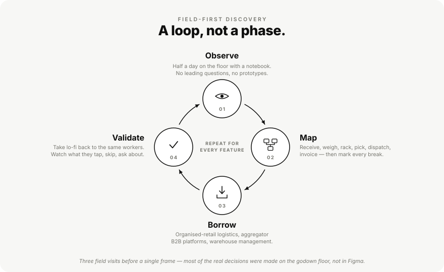
fig. 07Field-first discovery — a loop repeated per feature, not a phase run once.
05 · ux design03 surfaces
Designing for Calloused Hands.
The Worker View was the hardest surface to get right, and the surface that decides whether
the whole system works. If the warehouse floor rejects it, the data downstream is fiction.
If they adopt it, every other screen becomes credible.
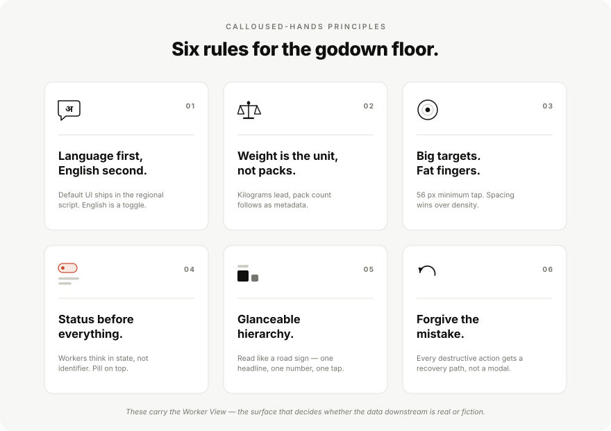
fig. 08Six rules for the godown floor — the principles that carry the Worker View.surface 01 · desktop
Admin Console
The Control Tower
Built for an owner or manager scanning the operation in a morning sweep: how much stock
came in, what's in motion, what's stuck, what's been billed. The IA splits into seven
entities — Dashboard, Orders, Catalogue, Inventory, Customers, Payment, Equipment — each
behaving like a self-contained module.
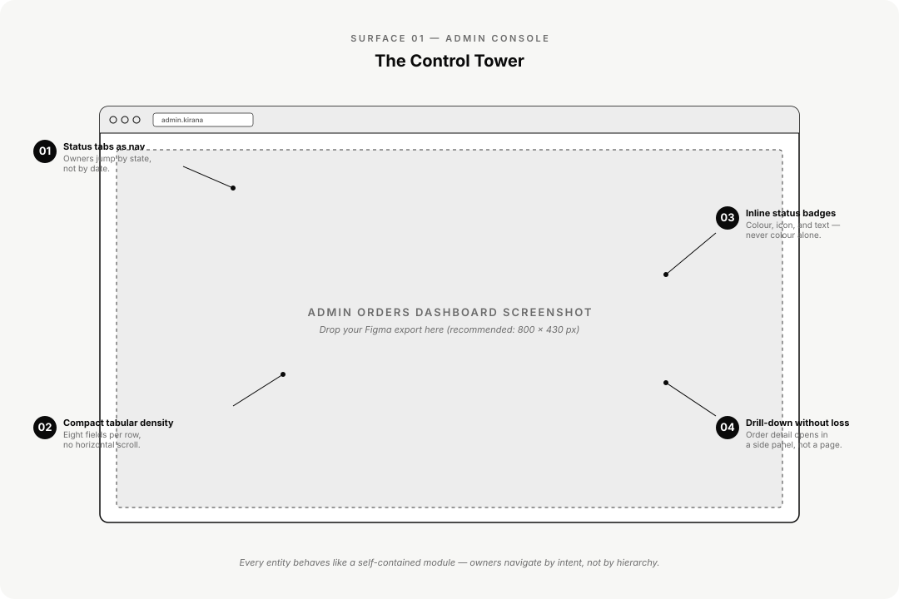
fig. 09Admin Console — seven self-contained modules, scanned in a morning sweep.surface 02 · tablet
Worker View
The Floor Instrument
It runs on a tablet mounted on a picking trolley or a phone in a worker's pocket. Its
job is to hand a worker the next item, the next rack, and the next weight — and stay out
of the way. The picker flow is three screens deep.
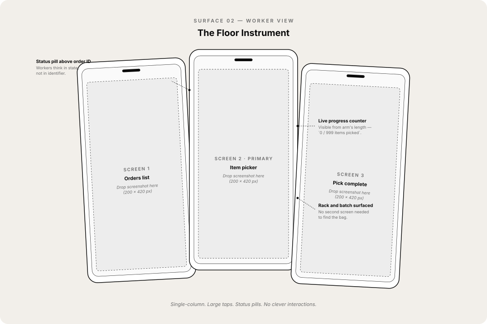
fig. 10Worker View — next item, next rack, next weight. Three screens deep.surface 03 · mobile
B2B Customer App
The Buyer's Side
The Customer App had to do something subtle: convince a kirana owner who's been ordering
by WhatsApp for fifteen years that an app is worth the friction. We optimised for three
actions, fast — order, track, repeat.
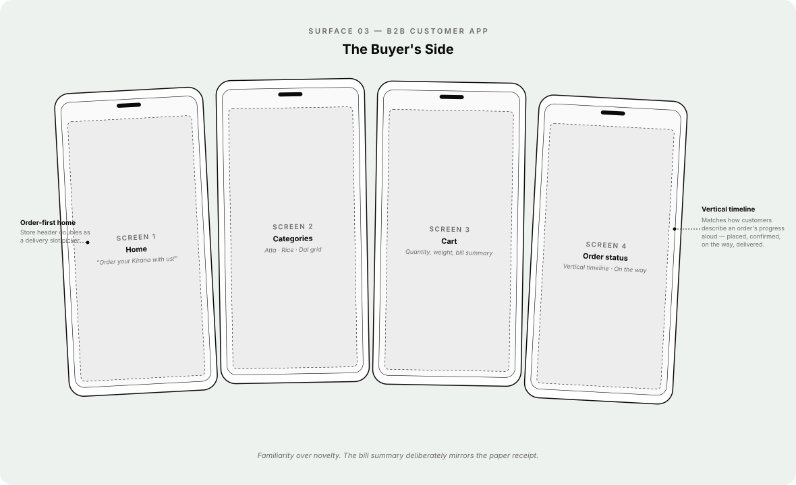
fig. 11B2B Customer App — order, track, repeat.
06 · visual languageone system
Legibility before personality.
We anchored the visual system on legibility before craft. The result is intentionally
plain. The owner sees a clean dashboard, the worker sees a calm screen, the customer sees
a credible app. No surface is trying to be interesting.
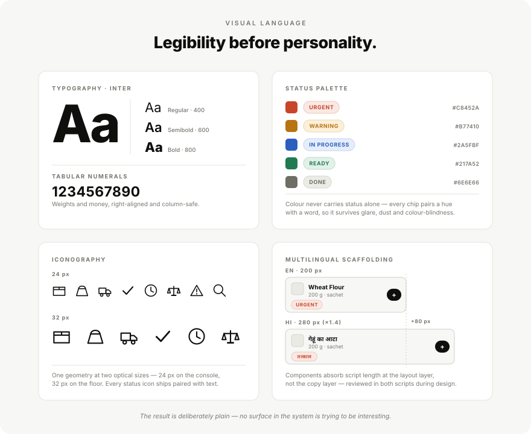
fig. 12The system sheet — type, status palette, icons at two optical sizes, and multilingual scaffolding.
07 · closinglive, early
Still Iterating, Already Working.
The system is live in early operations and we're iterating on real workflows every week.
We don't have final outcome metrics yet — but the early signal is qualitative, observable,
and consistent.
For the first time, I don't have to call the godown to know what's in stock.
Business Owner · Internal Review
What's working.
working — 01
Workers prefer the worker view to the paper register.
Adoption on the floor was the variable we worried about most. Anecdotally, workers
cite the Hindi-first UI and the large status pills as the reasons they didn't push
back.
working — 02
B2B customers place repeat orders without a phone call.
The pattern we hoped to break — WhatsApp threads as the order channel — is breaking.
Slowly, but in the right direction.
Projected impact.
Framed against industry benchmarks — targets, not measured results.
inventory shrinkage5–10%
Typical in unorganised B2B grocery wholesale. Our weight-aware ledger is designed to
compress this materially as data accumulates.
order placement< 2 min
In-app order placement, down from a typical 4–6 message WhatsApp exchange. Status
replaces messages.
language coverage2 → n
First-party Hindi at launch. Component system was built to absorb regional languages
without redesign.
Winning moments.
01
Earned trust on the floor.
The hardest stakeholder wasn't the owner or the PM — it was the worker who'd done this
job for ten years without a screen. Watching one of them check the rack number on the
tablet before walking to it was the moment the project felt real.
02
One system, three surfaces.
A single token set, one type scale, one icon library — across web admin, tablet
worker, and mobile customer.
03
Multilingual wasn't bolted on.
Every component was reviewed in both scripts during design, not localised afterwards.
Lessons learned.
01
Field research is non-negotiable for systems like this.
Personas written in a meeting room would have produced a wrong product.
02
Density is contextual.
The admin loves it. The worker hates it. The same designer has to know when to add
information and when to subtract.
03
Designing for low-tech-affinity users is a senior skill.
The instinct to add features is the wrong instinct here. The right move is almost
always to remove a step or replace text with an icon.
04
The invoice was a clue.
The fact that only the invoice was digital told us the operation already knew where
digitisation pays off — they just hadn't found a way to extend it upstream.